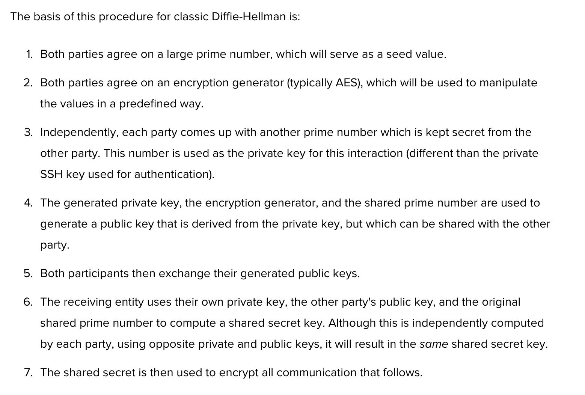
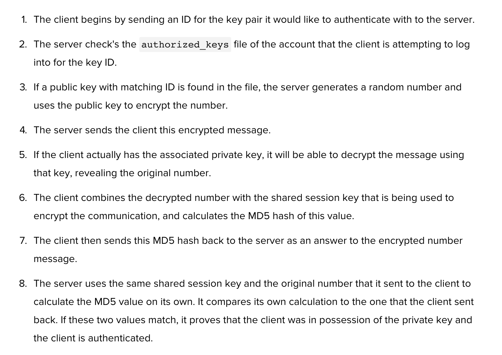

SSH - secure shell - is a protocol and mechanism which enables cryptographically secured connections. It allows, among other things, secured and encrypted remote logins - after establishing authentication through a number of different encryption processes and handshakes - to other servers. After securing a connection with a remote server, I can then safely run shell commands within that server, in the case of using a Digital Ocean droplet, or in the case of Github, push files to remote repositories from my local device, without having to provide a username and password.
Digital Ocean (DO) has a good tutorial on explaining a number of these processes. The SSH mechanism is said to work analogously to the server/client model. This means that there is a two-way movement in the transaction: the server awaits a request - listening on a specified port (usually 22, although DO recommends as best practice changing this) - from the client, while the client issues the request to authenticate. This transaction contains a number of complicated algorithmic interactions in order to both verify the client's and server's credentials.
DO lists three different cryptographic techniques that ssh uses. The first of which uses symmetric keys. Symmetric keys encrypt the totality of an SSH session - those public/private keys we generate are only used as part of authentication. Both the client and the server work together to create this symmetric key. They do so by sharing "certain pieces of public data and manipulating them with certain secret data" in order to derive a symmetric key. However, it sounds like that this symmetric key is generated in part from the public keys that each part brings to the transaction.
The entire process is later referred to as a variation on the Diffie-Hellman key exechange which goes something like this (courtesty of DO):  Part of this process is in part similar to the second technique of SSH, which is asymmetrical encryption.
Asymmetrical encryption is the public/private key relationship (and what I am most familiar with). It consists of a public and private key in which the mathematical relationship between the two allows the private key to encrypt and decrypt messages received and sent from the public key. This allows the public key to be shared publicly, putting it in a github account, or a digital ocean account, for example. In doing so, the public key acts as a filter for the private key to encrypt data in a unilateral direction. This means that the public key is unable to decrypt any messages it writes or receives unless the private key gets ahold of it. Do not put your private key on github. Do not put your private key in a private repository on github, either.
Asymmetrical keys are used in the process of authentication when attempting to SSH into a server. The public key of a client is placed on the desired server, (in the ./ssh directory of 'authorized_keys') and when the client makes a request, if it is able to decrypt the public key, it demonstrates the client holds the private key (which is why it must be kept private), and is authenticated :)
So, the entire process resembles something like this: I make a request to a remote server. The server checks if my public key ID is in the authorized_keys file in the /.ssh directory. If it is, the server encrypts a randomly generated integer using the public key associated with the ID I've sent the server, and sends it back to me. Since I have the private key, I am able to decrypt this message (this is why the private key is essential, since without it I couldn't move past this step). My computer then uses the decrypted number, combined with the symmetrical key already encrypting this transaction to create an MD5 hash of the number (I haven't talked, or learned much about hashing yet, and will return to this in a future post). For now, the important difference between a hashed number and an encrypted number is that a hash digest is meant to be irreversible, while something encrypted is intended to be decrypted at some later point. Anyways, I send this hashed value back to the server, which in the meantime has undergone the same process. The server then compares the resulting hashes, and if they match, this means I was able to decrypt the first number sent to me by the server with my private key. And so I'm authenticated. Woosh. It's a bit of a multi-step process, and I think Digital Ocean does a great job summarizing it here with this sequence: (thanks again to DO for all this information)